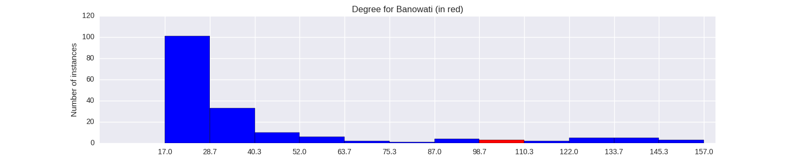

Quantiative Wayang Dictionary
Banowati
Terms of address: Dewi
Type: Human
Origin: India
Notes on the Sanskrit version: Known as Banumathi, wife of Duryodhana. In the Indian Mahabharata she is depicted as a chaste wife. There is a story where Karna and Banumathi play chess and Banumathi leaves halfway through the game. While Karna tries to reach out his hand to make her continue the game, he accidentally pulls her waist chain and the pearls scatter on the floor. Duryodhana appears at this scene and Karna and Banumati feel embarrased. Duryodhana, instead of suspecting his friend and wife trusts them and this trust is depicted through his act of picking up the pearls of Banumati's waist chain.
Alternative names: Banumati, Banuwati
Description in the Javanese version: Banowati marries Duryudana but is in love with Arjuna. She often conveys sensitive information of the Kurawa faction to the Pandawas. She marries Arjuna after the Baratayuda war is over. This leads to her assassination by [Aswatama].
Found in the follwing lakon (stories):
- Semar_Boyong_(Wahyu_Katetreman)
- Puntadewa_Wisudha
- Dewa_Ruci
- Wahyu_Makutharama
- Brajadhenta_Mbalela_(Gatotkaca_Wisudha)
- Sudamala
- Wahyu_Kaprawiran
- Semar_Mantu_Alternative_Version
- Suksma_Langgeng
- Bandung_Nagasewu
- Wahyu_Cakraningrat
- Wahyu_Kembar
Family relationships
Mother: Pujawati
Father: Salya
Siblings: Erawati, Surtikanti
Consorts: Duryudana
Offspring: Bomanarakasura, Lesmanawati
More information
Killed by: Aswatama
Wanda: Golek, Berok
Sources: Ensiklopedi Wayang Purwa, pp. 81-82; Mengenal Gambar Tokoh Wayang Purwa, p. 37; Sejarah Wayang Purwa, pp. 246-247
Network measurements for Banowati
| Measurement | Value | |
|---|---|---|
| Degree | 106.0 |  |
| Weighted Degree | 307.0 |  |
| Closeness Centrality | 0.719008264463 |  |
| Betweeness Centrality | 253.290454454 |  |
| Eigenvector Centrality | 0.773857293299 |  |
{kind=link}
Characters in the same adegan as Banowati
| Character | Link weight |
|---|---|
| Character | Link weight |